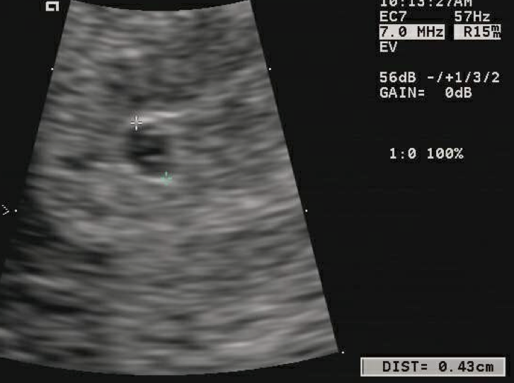

Página 11 · Parte F · Fecho do caso âncora
Classificar, calcular, prever — os três movimentos de fechamento
A paciente volta depois de a apostila inteira. A pergunta muda: dado o que foi ensinado (tríade, epônimos, relógios), como classificar cada achado, calcular a IG e prever o US — no caso único, sem inventar nada.
Como achar presunção no caso (retire o ninho)
Para achar presunção no caso: retire tudo que for útero, vagina ou vulva. Presunção no caso: atraso menstrual · mastalgia · náusea · (eixos sistêmicos referidos: constipação, falta de ar, dor lombar, edema) · hipertrofia de glândulas sebáceas / tubérculos de Montgomery · aréola secundária (Hunter).
Como achar probabilidade e epônimos
Para achar probabilidade: mantenha o que for útero, vagina e vulva. Probabilidade no caso: arroxeamento vulvar · arroxeamento vaginal · amolecimento do colo · aumento do volume uterino (abaulado).
Epônimos aplicáveis ao caso (treino): Hunter · Montgomery · Piscacek (assimetria/abaulamento) · Jacquemier · Chadwick · Goodell.
Certeza ausente no exame inicial
Certeza no caso: ausente no exame descrito (sem BCF ao sonar; sem MF pelo médico; sem Puzos; lab/US ainda não trazidos no enunciado inicial). Por isso o dispositivo “pausar e classificar” da P2 e da P7 se sustenta — a certeza é trabalho em série, não achado isolado.
Conta 5s2d e o que o US deve mostrar
Cálculo: da DUM (27/mar) até a consulta (03/mai) → contagem em dias → dividir por 7 → 5 semanas e 2 dias de IG. (Verificação: 27/mar → 03/mai = 37 dias = 5s2d.)
Com 5 semanas e 2 dias, o US de confirmação deve mostrar saco gestacional e vesícula vitelínica; embrião ainda pode estar ausente — e isso pode ser normal (embrião típico a partir de ~6 sem). BCF esperado no US: final da 6ª / início da 7ª — não é exigência em 5s2d.
O fecho do caso treina três movimentos: (1) classificar no degrau · (2) nomear epônimos · (3) prever o US pela IG.
[PONTE-A15] A paciente do caso reaparece em modificações maternas como gancho de sintomas — lá como adaptação, não como re-lista de presunção.
| Achado do caso | Onde mora | Degrau / movimento |
|---|---|---|
| Atraso menstrual · mastalgia · náusea | mãe · mama · sistêmico | Presunção |
| Tubérculos de Montgomery · aréola secundária | mama | Presunção (Hunter) |
| Cloasma / linha nigra | pele (sistêmico) | Presunção |
| Arroxeamento vulvar / vaginal | vulva / vagina | Probabilidade (Jacquemier / Chadwick) |
| Colo amolecido | colo | Probabilidade (Goodell) |
| Útero abaulado à esquerda · aumentado | útero (assimetria) | Probabilidade (Piscacek) |
| BCF ao sonar · MF pelo médico · Puzos | clínica | Certeza — ausente no exame |
| IG calculada | DUM 27/mar → 03/mai | 5s2d (37 ÷ 7) |
| US previsto em 5s2d | 1º trimestre precoce | saco + VV (embrião / BCF ainda não obrigatórios) |

A imagem mostra exatamente o que se espera em 5s2d: saco de 4 mm com vesícula vitelínica visível e embrião ausente. Caption literal da fonte: “corresponde a aproximadamente 19 dias pós-concepção”. É o US que o caso do posto prevê — nem embrião obrigatório, nem BCF.
4 mm intrauterine gestational sac with yolk sac visible, no embryo. Photo: Luis Goncalves, 2012. Licensed under CC BY-SA 3.0. Source: https://commons.wikimedia.org/wiki/File:4_mm_gestational_sac.png
Quiz — fixação
No caso, arroxeamento vaginal + colo amolecido + útero abaulado à esquerda:
- Gabarito C. Vagina · colo · útero = ninho. Tudo que mora no ninho sobe para probabilidade, independente do epônimo (Chadwick · Goodell · Piscacek).
- (A) certeza exige ouvir ou sentir — achados só de inspeção/palpação não fecham certeza.
- (B) presunção é mãe · mama · sistêmico — o ninho é o degrau de probabilidade.
- (D) achados do ninho não são irrelevantes: subem o degrau e sustentam o raciocínio.
- Por que cair na B: confundir mama (presunção) com colo/útero/vagina (probabilidade). Mama é da mãe; colo/útero/vagina é do ninho.
IG pela DUM no caso é:
- Gabarito B. 27/mar → 03/mai = 37 dias. 37 ÷ 7 = 5 com resto 2 → 5s2d.
- (A) 4s0d = 28 dias — não chega na data de 03/mai.
- (C) 8s0d = 56 dias — muito além da consulta.
- (D) 12s0d = 84 dias — fora do 1º trimestre precoce.
- Por que cair na A/C/D: erro de contagem de calendário — DUM é o marco 0, não o início do atraso.
Em 5s2d, ausência de embrião no US:
- Gabarito B. Em 5s2d, o US típico mostra saco + vesícula; o embrião aparece mais tarde (~6 sem). Ausência de embrião nessa idade pode ser normal — não fecha diagnóstico.
- (A) fechar abortamento só pelo US precoce é precipitação — a série + embrião posterior discriminam.
- (C) Pinard é ausculta tardia — não responde dúvida de 1º trimestre.
- (D) beta positivo convive com US em 5s2d sem embrião — o achado confirma a gestação, não a contraria.
- Por que cair na A: fechar diagnóstico por uma imagem só — a regra é série + clínica.